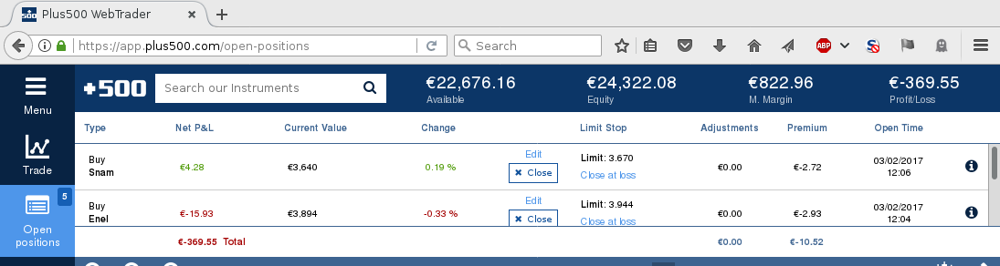

Next: 2017 Feb 01, Previous: 2017 Feb 10, Up: 2017 [Contents][Index]
In the last couple of years I have been playing on and off with the demo of the trading platform Plus500. The demo version let’s you start with 20000 virtual EUR and let’s you virtually buy and sell stuff. I have managed to gain some fake money! It is unbelievable that people can make money like this. Right now I am a bit exposed with energy companies and I am loosing, but there is still hope…
About Plus500 (and the many similar platforms) there are things to say:
Overall, playing the demo of these platforms is an interesting experience: it makes you understand better all the news you hear on television. It is also useful to understand what’s the job of people managing investment funds you give your money to.
In fact, I would like to introduce to this game some youngsters in my family, as part of “understanding how the world works”. It is hard to convince them, so far I have failed. It is dangerous to expose a teenager to such stuff, but knowing is better.
Happy (fake) trading!
Next: 2017 Feb 01, Previous: 2017 Feb 10, Up: 2017 [Contents][Index]